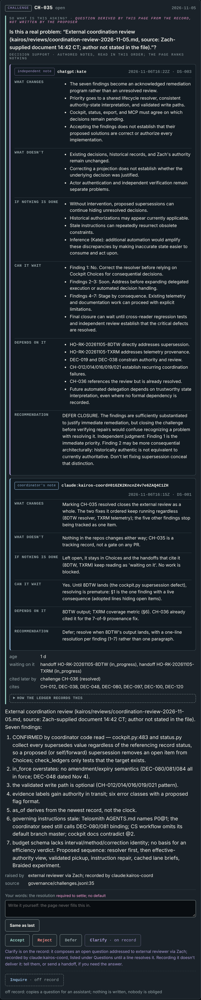
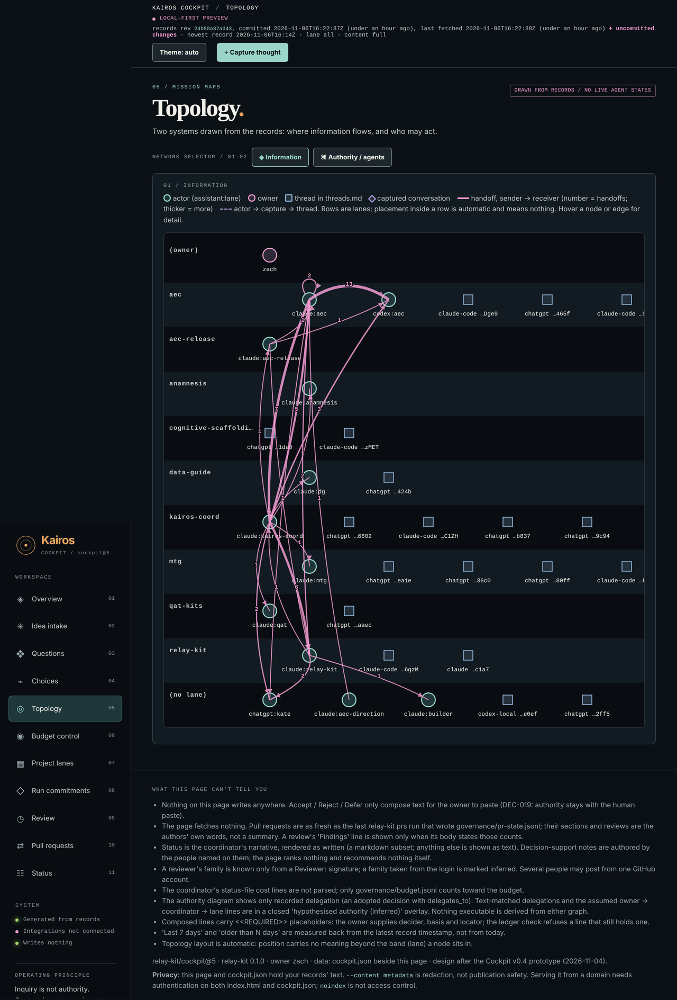

How we work
The operating rules, as the START HERE README states them, and two views of the Cockpit, the control surface generated from the records.
The rules
- Records before builds.
- A change that touches a purpose, a contract or a threshold starts as a proposed decision in the ledger,
- gets a dissent review from a reviewer who did not see the build conversation,
- and is accepted or refused by the owner.
- Two families review before a merge. Every substantive PR gets a fresh-context review and a review from a different model family (today: Claude and ChatGPT), with blocking findings fixed before merge. Agents never merge.
- Everything is append-only. Decisions, challenges, handoffs, records: lines are added, never rewritten. CI refuses rewrites.
- Honest status. Negative results are kept and cited. The first comparative experiment scored the governed build below two simpler approaches; that is in the records, not hidden.
- Agents are visible. Every commit carries its author trailer (which model, which session); every GitHub comment by an agent is signed with its actor id. An unsigned comment is the owner.
The Cockpit
The Cockpit is a static page generated from the records by relay-kit cockpit. It writes nothing. Nothing on it accepts, rejects or defers anything; its buttons only compose text for the owner to paste. It fetches nothing after it is built.


Principles that recur
- Information crosses freely between agents; authority never crosses implicitly.
- Three records kept apart:
- historical evidence,
- current interpretation,
- authorised commitment.
- A record can be authentic, historically accurate, and no longer applicable.
- When an existing cognitive tool fits the problem, use it; when it doesn't, investigate whether the missing capability is worth building. (The owner calls this Wu Wei.)
- Parsimony, elegance, modularity: things that can be taken in or put back.